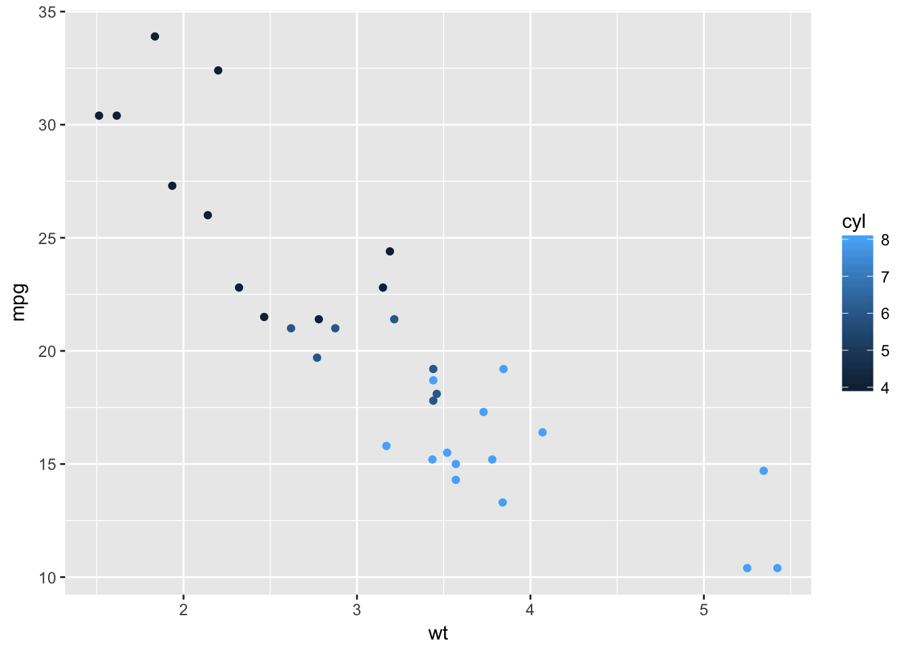

Car weight and MPG
Data Table
This is the set of data which includes a the miles per per gallon (mpg), number of cylinders (cyl), and weights (wt) of cars a sample of cars currently on the market.
## mpg cyl wt
## Mazda RX4 21.0 6 2.620
## Mazda RX4 Wag 21.0 6 2.875
## Datsun 710 22.8 4 2.320
## Hornet 4 Drive 21.4 6 3.215
## Hornet Sportabout 18.7 8 3.440
## Valiant 18.1 6 3.460
## Duster 360 14.3 8 3.570
## Merc 240D 24.4 4 3.190
## Merc 230 22.8 4 3.150
## Merc 280 19.2 6 3.440
## Merc 280C 17.8 6 3.440
## Merc 450SE 16.4 8 4.070
## Merc 450SL 17.3 8 3.730
## Merc 450SLC 15.2 8 3.780
## Cadillac Fleetwood 10.4 8 5.250
## Lincoln Continental 10.4 8 5.424
## Chrysler Imperial 14.7 8 5.345
## Fiat 128 32.4 4 2.200
## Honda Civic 30.4 4 1.615
## Toyota Corolla 33.9 4 1.835
## Toyota Corona 21.5 4 2.465
## Dodge Challenger 15.5 8 3.520
## AMC Javelin 15.2 8 3.435
## Camaro Z28 13.3 8 3.840
## Pontiac Firebird 19.2 8 3.845
## Fiat X1-9 27.3 4 1.935
## Porsche 914-2 26.0 4 2.140
## Lotus Europa 30.4 4 1.513
## Ford Pantera L 15.8 8 3.170
## Ferrari Dino 19.7 6 2.770
## Maserati Bora 15.0 8 3.570
## Volvo 142E 21.4 4 2.780Mpg is measured in miles/(US)gallons and wt is in thousands.
Summary of the Data
## mpg wt
## Min. :10.40 Min. :1.513
## 1st Qu.:15.43 1st Qu.:2.581
## Median :19.20 Median :3.325
## Mean :20.09 Mean :3.217
## 3rd Qu.:22.80 3rd Qu.:3.610
## Max. :33.90 Max. :5.424Within this set we see the average mpg of cars is roughly 20.1 mpg and teh average weight is 3,217lbs.
Effect of Weight on Mpg

Through this plot there is a clear inverse realtionship between the weight of a car and the miles per gallon the car gets. Also noteable is that cars with a higher number of cylinders tend to weigh more.